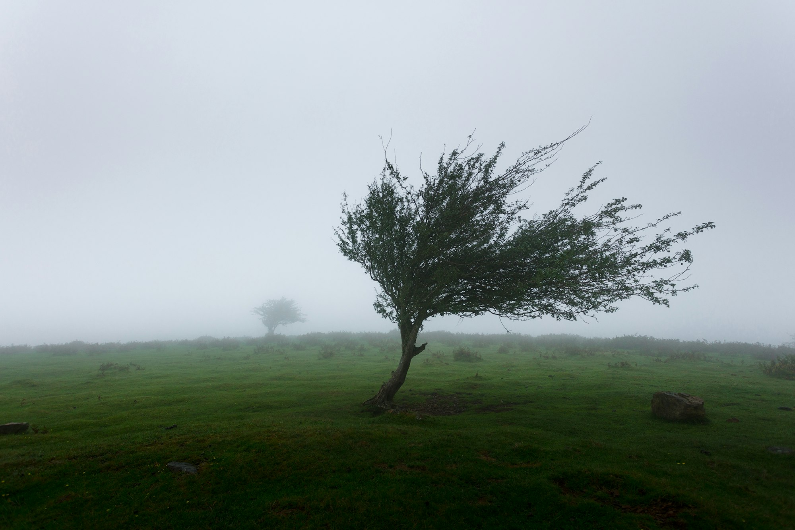

Niyama · The First Observance · 06
Shaoca
Purity
The conduct toward the world is settled. Now the work turns inward — and the inner cleaning is the harder of the two.
The word
Cleanliness is of two kinds.
बाह्य
External
The proper use of soap, water and other cleansers to keep the body, the clothes and the surroundings clean. By it the physical objects we touch are made fit for use.
आभ्यन्तर
Internal
The cleansing of the mind itself — of the complexes and selfish motives that distort it. No soap reaches here. This is the laborious one.
Shaocantu dvividhaṃ proktaṃ báhyamábhyantarantatha.
The easy half
Body, clothes, surroundings.
To remove outer dirt you must, for a while, come into contact with the impurity itself — your hands meet the grime to lift it away. It is direct, it is visible, and it is over quickly. This is the cleanliness most people mean. It is not the cleanliness that matters most.

The dirt of the mind
An acquaintance suddenly earns fame.
And a feeling of jealousy stirs. They did you no harm — yet, overpowered, you create trouble for them, or think ill of them. This is the complex that distorts the mind. As clothes and houses are dirtied in a dust storm, the mind is fouled, faster, by the smallest tempest of passion. Guard against the storm. Do not yield to it.
The application of force
…raw, with the impurities still in it
“The weight of the actual gold can be determined only by removing the impurities from the gold.”
Selfishness, entering every cavity of the mental body, has to be burnt and melted in the fire of sádhaná — until no black spot remains, and the true weight shows.
The cure
Mental dirt is removed by its opposite.
For greed
Greed → charity
One who is greedy for money should form the habit of giving — and serve humanity through that practice. The opposite course, held long enough, dissolves the pull.
For anger
Anger → politeness
One who is angry or egoistic should cultivate the habit of being polite — and serve humanity through that practice too. The remedy is always action turned outward.
Selfless service, and the effort to look on the world with a Cosmic outlook, are the only remedy for mental impurity.
On giving
Keep the bare necessities. Give the rest.
Should one make a pauper of oneself? No. Acquire only what you and your direct dependents cannot live without, and turn the rest to the collective welfare of all. Even in a house where food is scarce, keep something for those within, and donate the rest to the needy — for the desire must be to give with no thought of return.
Where it leads
A mind with no black spot left in it.
Shaoca opens the inward turn of Niyama. Cleared of complex and selfish motive, the mind grows still enough to rest in something larger than itself. What greed could never quiet, Santośa — contentment — now can; and the cleaning never really ends, because the storm always returns.
A Guide to Human Conduct · after Shrii Shrii Ánandamúrti